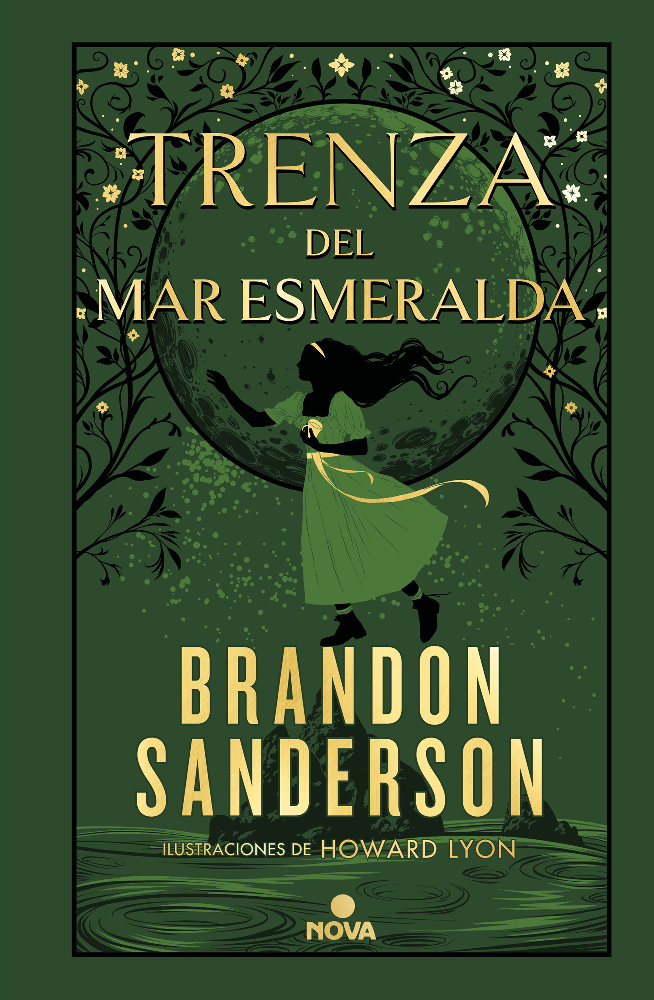
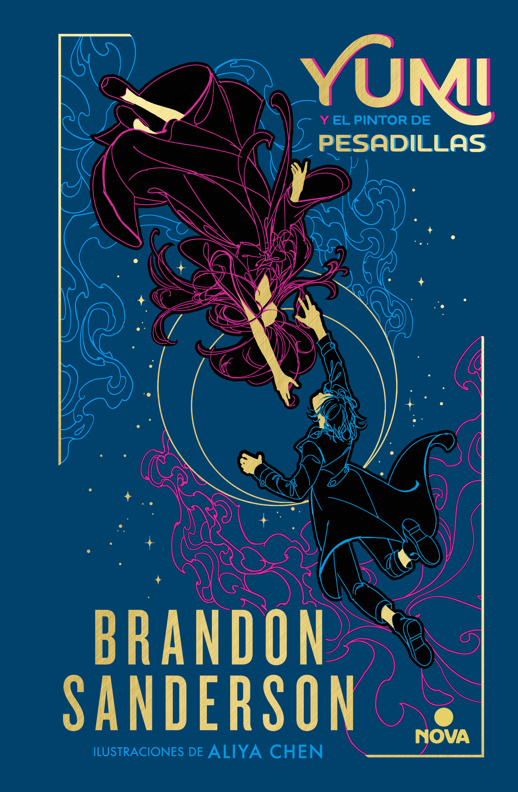
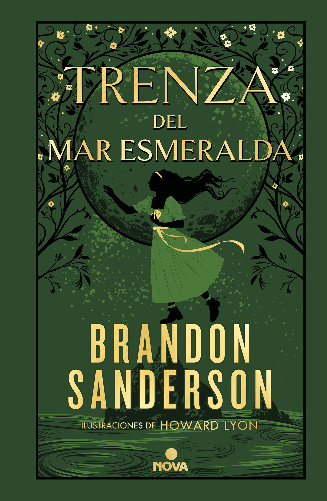
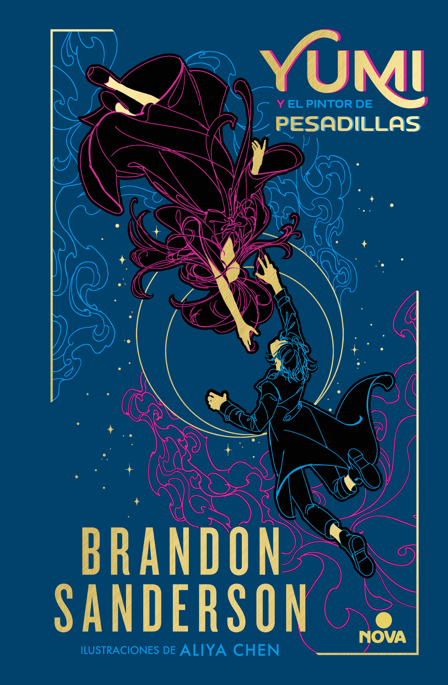
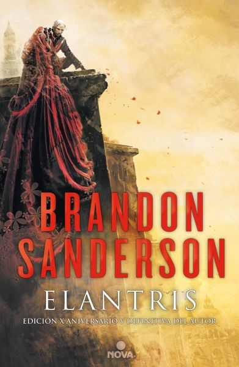
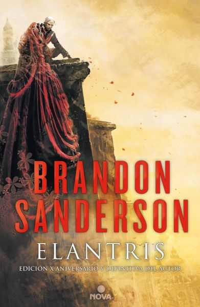

Ademas de las sagas principales, dentro del cosmere se encuentran asimismo varias sagas menores que ayudan a profundizar en el universo. Ejemplos de estás podrían ser Arena Blanca, la unica saga de novelas graficas pertenecientes al universo, o la futura saga de Elantris, el libro que dió inicio al universo y existen planes para que se convierta en una saga completa.
 





 
